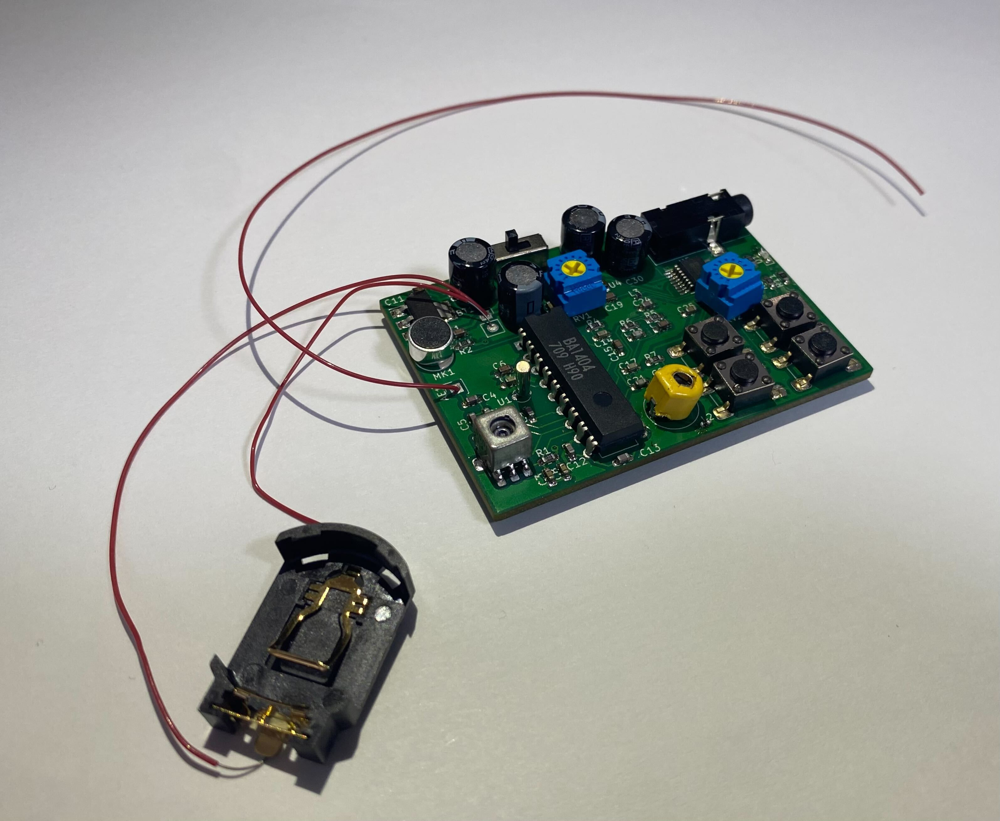

祝祭と霽れ
detective tranceiver
皆さんは映画やアニメで出てきた道具で、すげえ！欲しい！と思ったものはあるだろうか？私は欲しいと思った探偵グッズやスパイグッズを死ぬまでに全て作りたいと思っているのだが、その第一弾として名探偵コナンに登場する探偵バッジ型小型無線機の作成を試みた。基盤の設計から全て行なったため2ヶ月で完成までは至らなかったが、試作品を展示する。小型化に苦労したが3.9cm×5.7cmまでに詰め込むことができた。